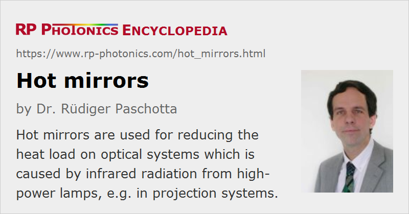

Hot Mirrors
Definition: mirrors which can reduce the heat load in an optical system by reflecting infrared radiation
Alternative term: heat control filters
More general term: dielectric mirrors
German: Infrarotspiegel
How to cite the article; suggest additional literature
Author: Dr. Rüdiger Paschotta
Particularly for image projectors which contain some kind of incandescent lamp (e.g. a halogen lamp) as light source for the illumination, there can be a substantial heat load on the optical system. This is essentially because not only the desired visible light is generated, but also the more substantial power in the infrared. That infrared light may be absorbed in optical glasses, for example, heat them up, and cause various kinds of detrimental effects, such as mechanical stress and deformations which cause optical aberrations.
In order to eliminate or at least mitigate that problem, special mirrors (heat control filters) have been developed which can work in two different ways as optical filters for removing infrared light:
- Hot mirrors reflect the infrared radiation while transmitting most of the useful visible light. (They are sometimes called heat reflecting mirrors, although strictly speaking they reflect infrared radiation.) Such a mirror is simply added to the beam path before the optical components which need to be protected.
- Cold mirrors reflect the visible light, while transmitting or absorbing most of the infrared light. Such a mirror is used as a folding mirror in the optical beam path.
Hot mirrors are realized as dielectric mirrors. Such a mirror should ideally reflect all light in the near and mid infrared. However, such a large reflection bandwidth is hard to achieve, since the refractive index contrast of the usual coating materials is relatively small. Also, the common materials eventually get absorbing for long enough wavelengths. Therefore, part of the heat protection may be accomplished by absorbing infrared light; a high reflectivity is achieved mostly in the near infrared, e.g. only up to wavelengths around 1.3 μm or 1.5 μm.
The infrared absorption in the mirror substrate may lead to some thermal effects in the mirror, which may more or less degrade the system performance. Such effects can be minimized by using a substrate glass with particularly good thermal resistance, including relatively small thermal expansion. For example, borosilicate glasses and fused silica are suitable for that purpose. Soda–lime glasses are sufficient only for lower powers.
As is common for dielectric mirrors, the reflection spectrum is optimized for a certain angle of incidence – for example, for normal incidence or for 45° – and the performance can be substantially worse for other incidence angles.
Suppliers
The RP Photonics Buyer's Guide contains 20 suppliers for hot mirrors. Among them:
Questions and Comments from Users
Here you can submit questions and comments. As far as they get accepted by the author, they will appear above this paragraph together with the author’s answer. The author will decide on acceptance based on certain criteria. Essentially, the issue must be of sufficiently broad interest.
Please do not enter personal data here; we would otherwise delete it soon. (See also our privacy declaration.) If you wish to receive personal feedback or consultancy from the author, please contact him e.g. via e-mail.
By submitting the information, you give your consent to the potential publication of your inputs on our website according to our rules. (If you later retract your consent, we will delete those inputs.) As your inputs are first reviewed by the author, they may be published with some delay.
See also: cold mirrors, dichroic mirrors, optical filters, thermal radiation
and other articles in the category photonic devices
|  |
If you like this page, please share the link with your friends and colleagues, e.g. via social media:
These sharing buttons are implemented in a privacy-friendly way!